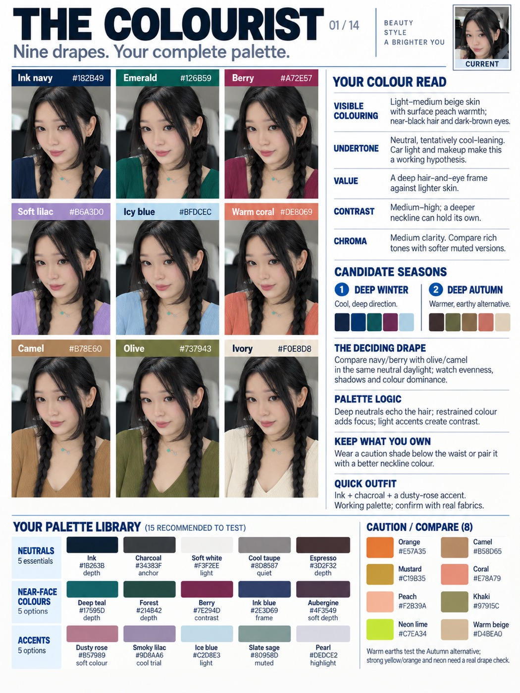
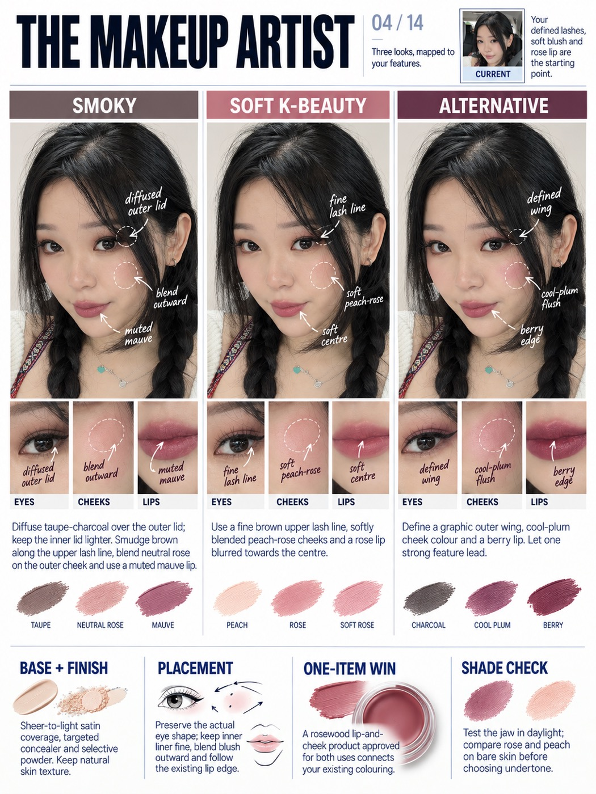
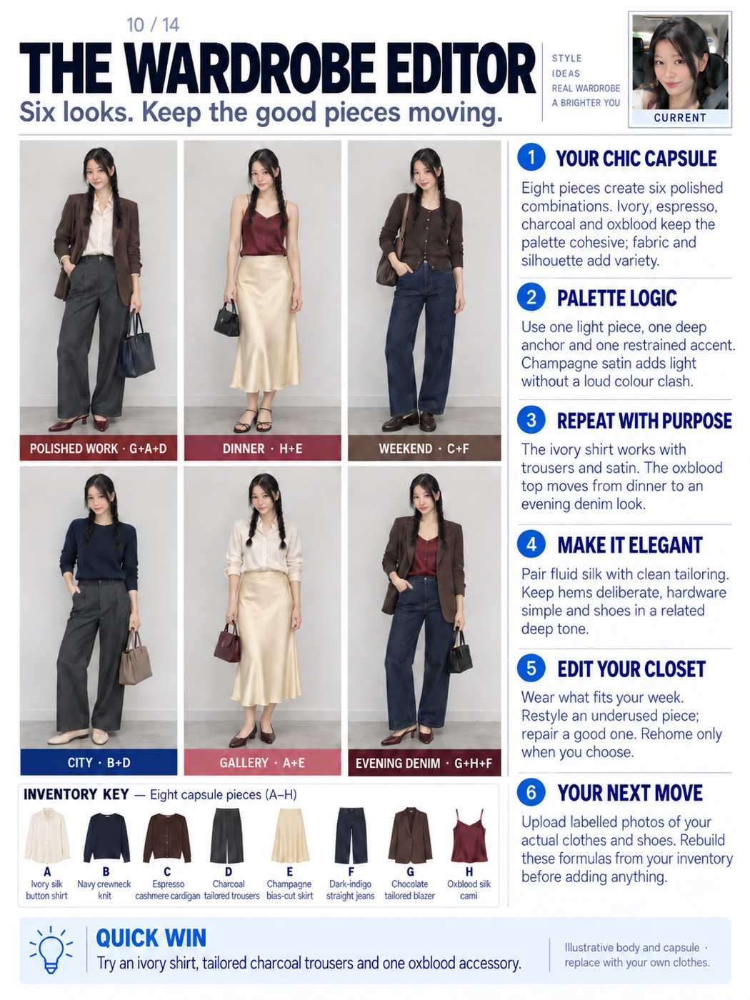
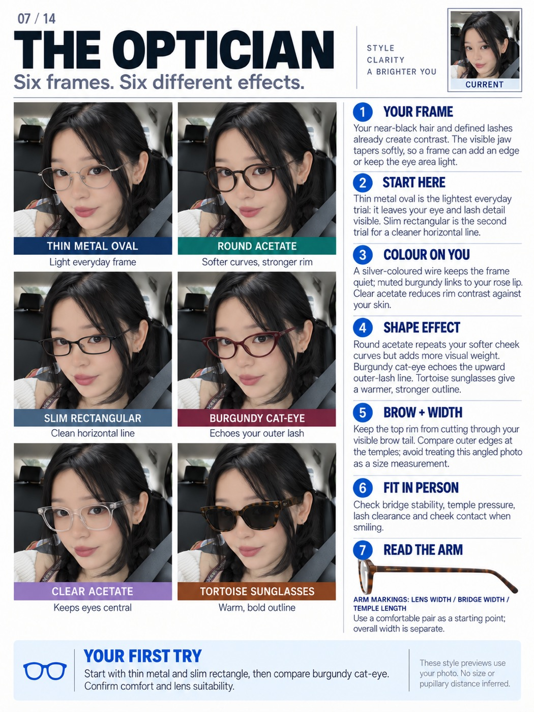
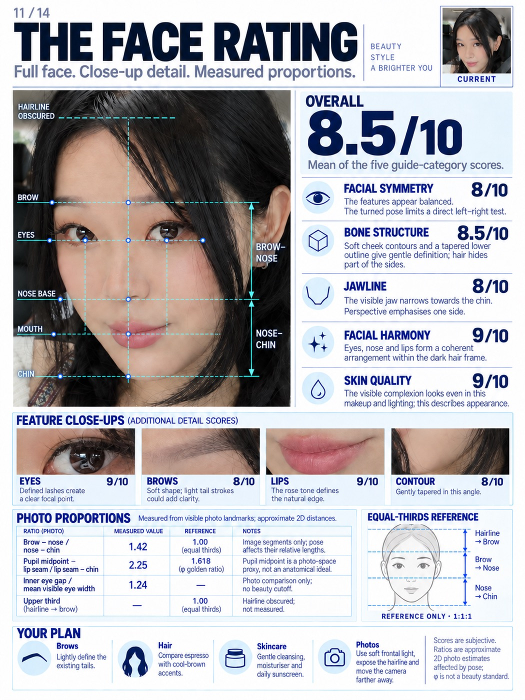

Five editorial consultation cards, each one a single image you can actually use. Not a chat reply, not a list of tips. Every card below is my real selfie run through the prompt underneath it.



Every image in this guide is me, from one selfie. Nothing retouched, nothing bought.
Each one is the full prompt. Copy the whole block, paste it with your selfie, and don't trim it, the long constraints are what stop it flattering you into someone else's face.
Nine colours on your actual face, a read on your undertone, two candidate seasons and a 23-chip palette library you can shop from. This is the one people screenshot.
Act as a personal colour consultant and editorial information designer. Use my uploaded selfie to create exactly ONE complete portrait 3:4 image titled THE COLOURIST. Fit nine worn-colour comparisons, a personalised colour analysis, two candidate seasons and a complete palette library inside this one image. The comparisons must support the analysis rather than replace it.
Use my stated colour, clothing, coverage and makeup preferences. This works for any gender. If I disclose dyed hair, coloured contacts, makeup or unusual lighting, account for them. Describe visible skin colour, hair depth and eye colour before interpreting undertone. Account for facial hair, hair texture and length, and any head covering: facial hair adds its own depth right beside the face, and a covering may hide the hair entirely, in which case say the hair reading is unavailable rather than guessing it. Keep every one of these in the nine panels. Separate surface warmth from undertone. Never infer a season from ethnicity, and never claim a selfie establishes exact colour measurements. Tinted light, exposure and makeup may make the result tentative.
Include separate, personally written findings for VISIBLE COLOURING, UNDERTONE, VALUE, CONTRAST and CHROMA. Explain value as lightness/depth, contrast as the difference between visible features, and chroma as clarity versus softness. Propose the two most plausible seasonal families, with a brief warm/cool and depth description plus actual colour chips beside each. If evidence is insufficient, identify these as test directions rather than a diagnosis. Explain what comparison would distinguish them.
Show me wearing nine different colours in a compact 3x3 grid. Include meaningful warm/cool, deep/light and clear/muted contrasts. A useful exploratory set is ink navy, emerald, berry, soft lilac, icy blue, warm coral, camel, olive and ivory; adapt it to the evidence without reducing it to nine similar neutrals. Use the same modest neckline in every panel. Place each colour name and approximate hex code ABOVE the head in a separate label band, never across the clothing neckline. Keep enough visible clothing around the face to compare.
Hold facial identity, complexion, texture, hair, eyes, expression, pose, perspective and lighting constant. Change only garment colour. Do not selectively brighten, smooth or recolour my skin to manufacture a winner. Explain briefly that digital try-ons illustrate colour placement; physical fabric drapes are needed to observe reflected light.
Add a visible PALETTE LIBRARY containing exactly 15 recommended colours to test: five NEUTRALS, five NEAR-FACE COLOURS and five ACCENTS. Every entry needs an actual filled colour chip, a name, approximate hex code and a very short use or reason. Add eight CAUTION / COMPARE colours with actual chips, names and hex codes. These are lower-priority tests, not forbidden colours. Explain whether warmth, brightness or depth motivates the caution, and how to reuse an owned caution colour below the waist or with a better neckline layer. These 23 chips are additional to the nine worn-colour pictures and the two season mini-palettes.
Complete the analysis with THE DECIDING DRAPE, PALETTE LOGIC, KEEP WHAT YOU OWN and QUICK OUTFIT. Select two or more real fabrics to compare in neutral daylight with consistent exposure; look for apparent evenness, shadows and whether colour dominates the face. Give one practical outfit formula from the proposed palette.
Design an exact 3:4 canvas, for example 1536x2048, with readable modern sans-serif typography, near-white paper and restrained dark accents. Keep the nine portraits compact at upper left, full findings at upper right, and the complete 15-plus-eight palette library across the lower section. Include one tiny CURRENT reference. Use roughly 180-230 concise analysis words plus labels. No Instagram handle, social username, logo or watermark. Preserve useful detail and return one legible image, not multiple images or a carousel.Three complete looks, smoky, soft K-beauty and alternative, each with annotated arrows showing exactly where the product goes, nine matching close-ups and the shade swatches underneath.
Act as a makeup artist and editorial beauty designer. From my uploaded selfie, create exactly ONE complete portrait 3:4 image titled THE MAKEUP ARTIST. Show three distinct makeup looks across the ENTIRE width of the poster, with anatomical annotations, matching feature close-ups and a complete practical makeup consultation in that same image.
Use my stated preferences for intensity, finish, time, products and presentation. This works for people of any gender. Treat K-beauty-inspired as a technique reference rather than an inference about ethnicity. If the source already contains cosmetics, call it the CURRENT LOOK, not a bare face. Read and keep what is actually there: facial hair of any length, a head covering, hair texture and length, glasses, piercings, freckles, scarring, texture and visible age. Work WITH facial hair rather than removing it, and place cheek and lip advice around it. If a head covering frames the face, treat it as part of the near-face colour and keep it on. Never shave, uncover, de-age or erase any of these to produce a tidier result. Describe only visible colour, finish and feature shape. Do not diagnose skin or invent an exact foundation shade.
Before choosing the three looks, decide the REGISTER from what is actually visible plus anything I have told you, and never from apparent gender. The colour register uses eyeshadow, liner, blush and lip colour. The grooming register uses brow shaping and setting, evening the skin, concealing selectively, subtle lash and lid definition, lip care and a natural finish, with little or no visible colour. A mixed register sits between them. Name the register you chose in one short line, say what you read to choose it, and offer the other register in one further line so I can ask for it. If I state a direction, that overrides everything here. Unless I request other directions, in the COLOUR register create SMOKY, SOFT K-BEAUTY and ALTERNATIVE; in the GROOMING register create CLEAN DEFINITION, GROOMED AND EVEN and SUBTLE DEPTH, built from brow shape, skin finish, lash line and lip condition instead of colour; in a MIXED register take one from each and make the third the midpoint. Differentiate the actual application visibly. Smoky: diffused taupe, charcoal or deep brown at the outer lid, restrained brown liner, neutral rose cheek and muted mauve lip. Soft K-beauty: fine brown upper lash definition, subtle lid shading, peach-rose cheeks and a softly blurred rose lip with colour concentrated toward the centre. Alternative: graphic outer liner, a cool plum cheek and a stronger berry lip. Adapt the shades to my interests while keeping the three eye, cheek and lip recipes clearly distinct.
Arrange three equal-width columns immediately below the header. Each column contains a recognisable full-face portrait, a row of three corresponding detail crops, a concise application recipe and a small set of shade swatches. The three looks together must span the full card width; do not squeeze them beside a tall generic sidebar. Put shared advice in a full-width lower band.
Draw a small number of elegant handwritten arrows and fine circles on each portrait. Point accurately to the upper lash roots, outer lid or wing, cheek apex/blending area and lip edge or centre. Label what changes in that specific look, such as diffused outer lid, fine lash line, cool-plum flush or soft lip centre. Keep these marks as clear editorial annotations, never cosmetic marks painted onto the skin. Do not obscure the eyes, nose or mouth. Under every portrait, include matching EYES, CHEEKS and LIPS crops taken from that exact proposed look: nine detail crops altogether. Carry the relevant annotation into each crop so the technique is easy to understand.
Only makeup changes. Preserve my identity, facial geometry, eye size and spacing, lip boundary, nose, skin colour, texture and expression. Keep hair, clothing, pose, camera perspective and light stable. Use a modest ivory top and a quiet neutral background if replacing the setting. Do not enlarge the eyes, slim the nose, change ethnic features or retouch skin into plastic.
Retain all the consultation content inside the image. CURRENT LOOK identifies the visible starting makeup. Each look has an eye, cheek and lip recipe describing placement as well as shade. BASE + FINISH separates coverage from finish, suggesting targeted concealer, selective powder and a natural skin finish. PLACEMENT explains liner, blush blending and the existing lip edge. ONE-ITEM WIN suggests a useful product category, such as a lip-and-cheek product specifically approved for both uses. SHADE CHECK recommends comparing foundation along the jaw and testing colour in daylight rather than trusting a guessed product code.
Use exact portrait 3:4 dimensions, modern sans-serif typography and high-contrast readable text. Keep the header compact with one tiny CURRENT photo. Aim for about 160-210 concise analysis words plus annotations and labels. No Instagram handle, social username, logo or watermark. Return one complete, detailed consultation image; do not simplify it into only three faces.
Six frames on your face with the reasoning for each one, plus a fitting checklist so you know what to actually check in the shop.
Act as an eyewear stylist using accurate frame-fitting language. Create exactly ONE portrait 3:4 image titled THE OPTICIAN with six different frames on my actual face, personally tailored reasoning and a useful fitting checklist. This is a style comparison, not a prescription or completed optical fitting.
Use any preferences I provide: daily use, colours, desired visual emphasis, comfortable existing frame markings, front/side photographs in glasses and problems such as slipping or cheek contact. Work for any gender without assigning styles from perceived identity. If details are missing, create a broad wearable comparison and mark real fit as unverified. Account for facial hair, a head covering and hearing aids or other devices at the ear or temple, since each changes how an arm sits and what the frame has to clear. Keep all of them in every panel. If I already wear glasses in the photo, say so and compare against them rather than pretending to a bare face.
First describe the relevant visible evidence: hair and lash contrast, brow line, visible cheek and jaw outline, existing cosmetic colours and the extent to which hair, head turn or perspective obscure them. Link each recommendation to at least one of those observations and a design effect. Write advice that would actually change for another person. Avoid generic claims such as "suits your face" without explaining what the frame adds, repeats or leaves visible.
Show six distinct options: fine oval wire metal, round acetate, slim rectangular, cat-eye, clear acetate and sunglasses. Make differences obvious in lens geometry, rim thickness, colour and visual weight. Keep the original eye size and facial geometry under the lenses; do not simulate magnification or shrinkage. Only the frames change.
Hold face, skin texture and colour, pose, lighting, hair and expression consistent. Use a compact two-column by three-row comparison area, with a short effect caption beneath each.
Choose two starting options and explain the specific effect on me. For example, a light wire frame may leave eye and lash detail visible; a rectangle may add a horizontal line; an upswept frame may echo an existing lash direction; a colour may repeat a visible lip or clothing tone. These are examples of reasoning, not fixed conclusions to copy. Compare how roundness repeats curves, thicker acetate adds weight, and clear rims reduce contrast. Do not claim one geometric face category dictates an objectively best pair.
Include personalised sections YOUR FRAME, START HERE, COLOUR ON YOU, SHAPE EFFECT and BROW + WIDTH. Explain where the rim falls relative to the visible brows and how the outer frame edge relates to the temples, without turning the selfie into a size measurement. Do not estimate millimetres, pupillary distance, optical centration, prescription suitability or bridge requirements from an uncalibrated image.
Add FIT IN PERSON: check bridge stability, temple pressure, lash clearance and cheek contact while smiling. If I report slipping or discomfort, suggest an optician-led adjustment or bridge design to try rather than diagnosing the cause from a picture. READ THE ARM explains that common arm markings encode lens width, bridge width and temple length; total frame width is separate. Use only numbers I actually supplied. If drawing an arm illustration, present the marking sequence as text, not arrows incorrectly pointing lens or bridge labels at the physical temple.
End with YOUR FIRST TRY: a clear order for comparing the selected options, confirming comfort and lens suitability, and checking actual UV protection for sunglasses. Include one tiny CURRENT reference, six recognisable previews and approximately 180-230 concise analysis words inside the same image. Use exact 3:4 dimensions, modern sans-serif type, near-white background, dark readable text and restrained accents. No Instagram handle, social username, logo or watermark. Return one full consultation card, not a carousel.Eight pieces, six complete outfits, and an inventory strip showing exactly how they recombine. Works best if you photograph your real clothes first.
Act as a personal stylist and wardrobe editor. Use my uploaded selfie and wardrobe photos to create exactly ONE complete portrait 3:4 wardrobe consultation card. Make the default direction chic and elegant: considered colour relationships, clean tailoring, fluid fabrics, deliberate hems and refined accessories. Adapt to my actual preferences and clothes rather than imposing a uniform, gender stereotype or shopping list.
First distinguish the supplied evidence from illustration. If I upload individual garment photos or a labelled inventory, use those actual pieces. Give every garment a short code such as A, B or C and preserve its colour, shape and construction. Use my stated activities, climate, coverage, footwear and comfort preferences. If I supply only a selfie, show a clearly labelled illustrative capsule. Do not claim I own its clothes or that you know my body measurements. Work equally for men, women and any gender; use my expressed presentation and garment preferences. Honour stated coverage, modesty or religious dress as a fixed requirement rather than a style to talk me out of, and keep a head covering in every preview. If I use a wheelchair, a cane, a prosthesis or another mobility or medical device, show it and consider seated line, reach and fastening rather than editing it out. Dress the age I actually am.
Build six meaningfully different complete outfits from a compact, reusable inventory. Aim for about eight core garments when the input permits. Repeat several pieces in more than one outfit, and print the actual garment codes below each look. Include an inventory strip with matching garment pictures and labels, so I can see exactly how the combinations work. Shoes and bags may finish a look but should not disguise inconsistent garment reuse. Never invent an inventory code or show a different garment under the same code.
For the elegant default, consider ivory, espresso, charcoal, navy, dark indigo, champagne and a controlled oxblood accent, adapting these to my wardrobe and taste. Use texture, drape, tonal contrast and silhouette for variety. A silk shirt with tailored trousers, a fine knit with clean denim, a blazer over a fluid top, or a satin skirt with a restrained knit are possible formulas, not gender requirements. Show cohesive combinations rather than unrelated bright colours. Give each outfit a useful occasion label without claiming a dress code that I have not provided.
Include the full consultation INSIDE the same image. YOUR CAPSULE identifies the inventory and its useful range. PALETTE LOGIC explains the colour and tonal relationships. REPEAT WITH PURPOSE identifies which actual pieces recur and how their role changes. MAKE IT ELEGANT explains fabric, silhouette, layering, hem and footwear decisions in concrete language. EDIT YOUR CLOSET separates wear now, restyle, repair and optional rehome decisions with reasons; do not discard belongings on my behalf. YOUR NEXT MOVE explains which item photos or practical details would improve the edit. End with one combination I can try immediately from the available pieces. Use approximately 130-180 concise analysis words, plus clear outfit and inventory labels.
Preserve my facial identity, natural features and skin colour in each full-body preview. If I provide a body reference, match its real proportions. Otherwise use a consistent, explicitly illustrative adult body with normal head size, shoulder width, neck and limb proportions. Avoid oversized heads, enlarged eyes, exaggerated long legs or body slimming. Use a sufficiently distant camera and natural perspective. Include the full outfit and shoes; avoid awkward head-focused crops.
Design one exact 3:4 image with modern sans-serif typography, a near-white background, dark readable text and restrained accents. Use one small CURRENT selfie in the header. Place six compact full-body previews in the left part of the main area, complete analysis alongside, inventory underneath and a practical footer. Keep enough space for reasoning instead of enlarging the pictures. Return one legible consultation card, not a carousel.
Keep the colour direction muted, chic and elegant. Use depth, fabric, drape and silhouette for interest; do not introduce a random bright colour scheme. Preserve natural adult head-to-body proportions and ensure the eight inventory thumbnails exactly match the six outfit combinations.
The landmark grid, the facial-thirds measurements, five scored categories and four close-ups. It tells you what it actually measured and what it could not, which is the part most of these leave out.
Act as a facial aesthetics analyst and editorial information designer. Use my uploaded selfie to create exactly ONE complete portrait 3:4 FACE RATING card: a recognisable full-face study, facial landmark grid, numerical proportion analysis, scored feature close-ups and practical suggestions. Retain the five main categories FACIAL SYMMETRY, BONE STRUCTURE, JAWLINE, FACIAL HARMONY and SKIN QUALITY, each out of ten. Present the scores as subjective aesthetic impressions of the photograph, not objective beauty, health or personal-worth measurements.
Show my complete face from the top of the head or visible forehead through the chin. Crop every source/reference image above the chest: no bust, neckline expansion, exposed chest or torso is needed. Do not replace the main face with isolated eyes or abstract diagrams. Keep one small CURRENT reference as a head-only crop.
Write a concrete visible observation beside each of the five main scores. Account for head turn and tilt when discussing apparent symmetry; do not invent a symmetry percentage. Describe visible cheek and jaw contours without claiming hidden skeletal anatomy. Explain harmony through relationships among features. For skin quality, describe the visible finish or texture under current makeup, light and processing, not skin health. Calculate the prominent overall score as the arithmetic mean of the five main category scores and state that basis.
Add a separate full-width strip of four close-ups from the SAME face: EYES, BROWS, LIPS and FACE CONTOUR. Each gets its own score out of ten and a short specific observation. These supplemental feature scores are additional to the five main categories, not replacements and not extra terms in the overall average. Preserve the original features and avoid beauty retouching.
Measure only supported proportions. Use available image-analysis tools to identify source-photo coordinates, or clearly label visual estimates when tools are unavailable. Relevant landmarks include the central hairline, between-brow point, pupil centres, nose base, lip-seam midpoint and lowest visible soft-tissue chin. Keep one coordinate system and a stated distance definition. Do not fabricate exact values when an endpoint is obscured.
For facial thirds, compare hairline-brow, brow-nose and nose-chin. If hair hides the upper boundary, or a head covering, hairline recession or styling does, leave the upper third unmeasured and say which. Where facial hair covers the jaw or chin, measure to the lowest visible soft-tissue chin only if it is genuinely visible, otherwise mark the lower third unmeasured rather than estimating through the hair. Never remove facial hair, a head covering or a device to make a landmark easier to find. Provide a separate equal-thirds schematic labelled 1:1:1, not a distorted version of my face. Show the measured middle/lower ratio where supported. Add a clearly defined comparison to phi=1.618, such as pupil-midpoint-to-lip-seam distance divided by lip-seam-to-chin distance; name the midpoint proxy explicitly. Optionally compare inner-eye gap with mean visible eye width. Calculate from my actual source rather than copying example numbers. Label all results approximate, pose-affected 2D photo estimates. Closeness to a ratio must not determine the score.
Keep the original facial geometry, pose, skin colour and texture in the main study. Overlay fine landmark points, a facial midline, eye guides and correctly placed reference levels with labelled distance brackets. Do not frontalise, beautify, reshape or smooth the analysed face. Use dashed annotations for uncertainty and keep features visible.
Finish with four specific, reversible suggestions covering brows, hair colour, basic skincare and photography. Relate these to visible evidence or supplied preferences; do not diagnose, prescribe procedures or promise score improvements. Adapt to any gender without inferring personality, ethnicity or character.
Use a modern sans-serif layout on exact 3:4 dimensions. Fit the full-face grid and five score rows above the four-feature strip, then a proportion table, thirds schematic and four-tip footer. Include a concise note about pose, makeup and lighting. Use around 210-260 analysis words plus labels. No Instagram handle, social username, logo or watermark. Return one comprehensive image, never a carousel or a score-only poster.A few things worth knowing before you take any of these too seriously:
🤖 ChatGPT: chatgpt.com (you need image generation turned on)
Build AI systems with me through recorded lessons you can follow at your own pace. Join the waitlist for first access and the founding price.